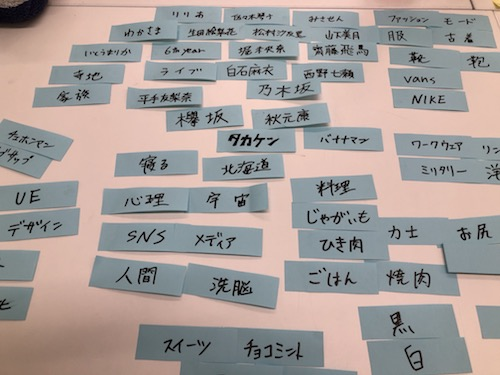
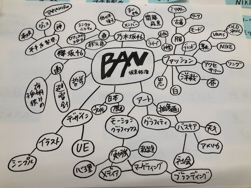
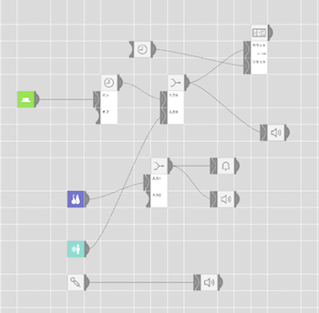
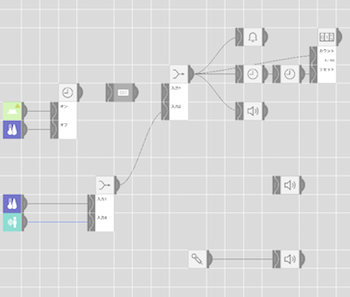

マインドマップの分析！

まずは自分が思いつく単語を付箋に書き出し！
ほとんどがアイドルと服に関してという感じ。
実際の生活をしてて費やしている時間が長いのもその２つ。

好きな分野ほど知識が多いからマップの繋がりも長い。
アイドルやファッションなど外面的な物が好きな反面、
そこに込められた背景や意味だったり、個性だったりと内面的な物も好きである
MESHの技術


【人感】ボビーに人がやって来たらスマホに通知が来る
人に話しかける
【湿度・温度】湿度が低くなったらスマホに通知が来る
来た人に水を求める会話になる
【スイッチ】水の制御装置と連動していて押すと一定量の水が流れる
ボタンの押された回数を記録する
【IFTTT】ボビーに来てくれた人に対してのリターンを設定
サービス
ボビーに人が来てその時の状態に応じてボビーが話しかけて来る。
例えば、水が少なかった場合「水が欲しいよー！」など。
それに対して来てくれた人が水をあげたりなどの反応を示してくれると,
ボビーが喜び、ボビーのSNSなどで反応を示してくれる。
チームでの貢献
このサービスは はるゑと2人で考えた。
2人でサービスについてのアイデア出しをして、それを基にして自分がまとめたりスライドを作ったりして
はるゑがMESHの流れを組んでくれた。ボビーのSNSのアカウントは2人で共有で管理している。
互いに仕事を上手くやりあって情報も共有出来ていたのでやりやすかった。